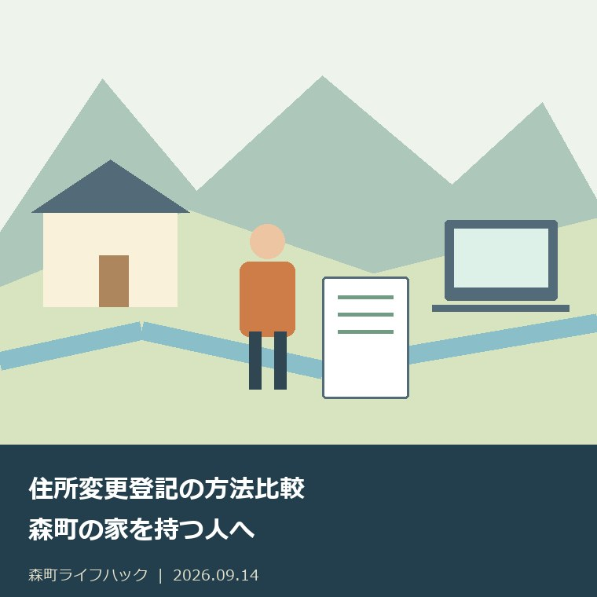
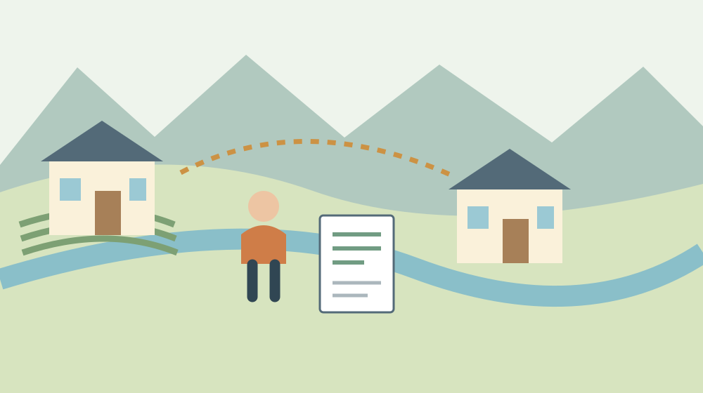
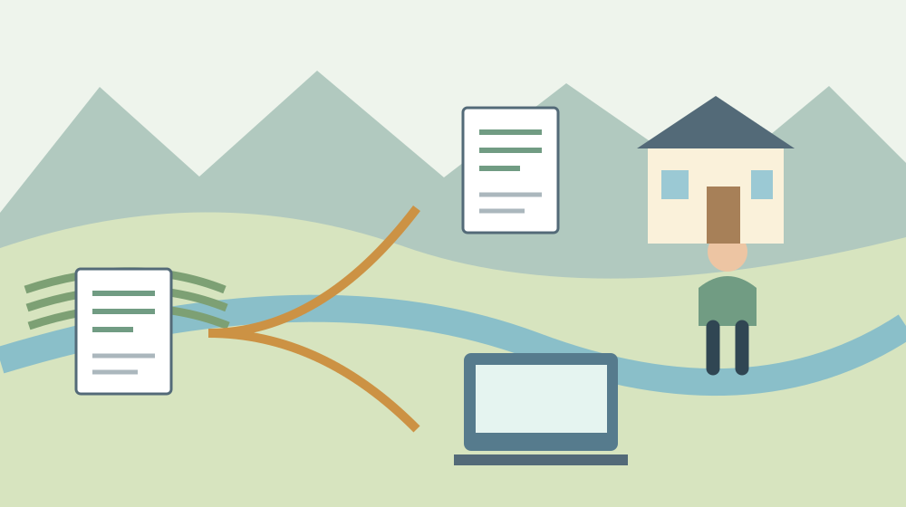

住所変更登記の方法比較｜森町の家を持つ人へ
／ 手続き・制度

Q. 森町の家の住所変更登記は、通常申請とスマート変更登記のどちらを選びますか？
通常の住所変更登記は自分で申請を進める方法です。国内在住の個人は、検索用情報を申し出て、法務局の確認と本人の了解後に変更されるスマート変更登記も利用できます。通常申請の登録免許税は不動産1個につき1,000円、スマート変更登記の申出は無料。即時反映は保証されないため、売買等で急ぐ場合は法務局・司法書士等へ確認を。今日は登記上の住所を見てください。
森町の家を持つ人は、転居と登記を別に確認する
森町に家や土地を残して町外で暮らす人は、郵便物、草刈り、設備の点検などを、その都度段取りしています。書類のためだけに森町へ戻るとなれば、移動と仕事の調整も要ります。住所変更登記とスマート変更登記の比較では、申請の料金だけでなく、誰が何を確かめるかまで見ておきたいところです。
私、大石浩之（磐田市／不動産業）は、すでに家の維持を続けている所有者へ、手続きを増やす説明だけをしたくありません。義務と期限は正確に伝えたうえで、移動や書類の負担を減らせる入口を示したいと思います。この記事は、国内に住む個人の所有者が方法を選ぶための比較です。
森町「転入届」のページは、町外から森町へ引っ越したときの届出を案内しています。一方、町の2026年6月1日回覧PDF7ページは、不動産の所有者の住所・名前の変更登記を別に案内しています。住民異動の届出が済んだかと、所有する不動産の登記がどうなっているかは、別々に確認します。
転入や生活の手続き全体は、森町への転入手続きの順番の記事で整理しています。この記事で見るのは、家の所在地を変更する話ではなく、登記記録に載る所有者の住所です。町外へ転居しても、所有する森町の土地が別の場所へ移るわけではありません。
2026年4月からの義務と、施行前の変更の期限
森町の2026年6月1日回覧と法務省「住所等変更登記の義務化について」は、2026年4月1日から、住所や氏名等を変更した日から2年以内の変更登記が義務になると案内しています。これから所有する不動産だけでなく、すでに所有している不動産についても確認が必要です。
2026年4月1日より前に住所等を変え、変更登記が未了の場合も対象です。その場合の期限は2028年3月31日と示されています。以前の転居だから対象外だと思っていた方は、まず登記上の住所を見てください。いつ転居したかと、登記をしたかを同じ記憶で済ませないための確認です。
法務省は、正当な理由なく義務を怠った場合は5万円以下の過料の対象になると説明しています。同時に、義務違反を把握しただけで直ちに裁判所への過料通知を行う仕組みではなく、催告や正当な理由に関する取扱いも示しています。金額だけを切り出して不安を急がせる説明はしません。
私は、期限の一覧を見たら、家族の記録に「住所が変わった日」と「登記を確認した日」を書くことを勧めます。個別の期限や例外の判断が難しければ、自己判断で対象外にせず、法務局や司法書士等へ確認します。今日の一歩は、申請を完成させることより、どの状態なのかを確かめることです。

通常申請とスマート変更登記を同じ軸で比較
通常の住所変更登記は、所有者自身が変更登記を申請する方法です。スマート変更登記は、個人の場合、検索用情報の申出をして法務局の確認につなぐ方法です。法務省は、住所等の変更の事実を確認し、本人の了解を得たうえで、登記官が職権で変更登記をする流れを示しています。
| 比較項目 | 通常の住所変更登記 | スマート変更登記 |
|---|---|---|
| 入口 | 変更登記の申請 | 個人は検索用情報の申出 |
| 対象の考え方 | 住所が変わった所有者が申請 | 国内在住の個人等。この記事は個人を扱う |
| 本人が進める準備 | 申請書と住所変更の経緯を示す情報等 | 氏名・住所・生年月日等と対象不動産の情報等 |
| 公的な費用 | 登録免許税は不動産1個につき1,000円 | 申出は無料。職権の変更登記も登録免許税等は不要 |
| 反映までの進み方 | 申請後、法務局の処理を経て完了 | 法務局の照会、本人への確認・回答を経て変更 |
| 移動を減らす方法 | 書面・オンライン等の方法を確認 | Webブラウザ又は書面の送付・持参 |
| 急ぐ場合 | 必要な期限を伝えて進め方を確認 | 即時反映を前提にせず、通常申請も含め相談 |
法務省の案内では、海外に居住する個人は、法務局が住所等の変更を確認できないため、住所等が変わった際の申請が必要です。「森町の家を持っている」という条件だけで、誰でも同じ方法を使えるわけではありません。現在どこに住んでいるかを、方法を選ぶ前提として確かめます。
私は、表の「無料」の欄だけで方法を決めることは勧めません。急いで登記をそろえる必要があるのか、過去の住所のつながりを説明できるのか、本人宛ての連絡を受け取れるのかで、準備が変わるからです。二つの方法の優劣より、自分の条件に合う手順を選ぶための比較表です。
通常の住所変更登記で準備すること
法務局の住所変更登記の案内は、登記申請書と、住所変更の経緯を示す情報などを説明しています。住民票の写しを使う場合には、登記上の住所、現在の住所、移転の日を確認できる内容が求められます。必要書類は住所の履歴や申請方法によって変わるため、各人の記録で確かめます。
転居が複数回ある場合には、住民票の写しだけで登記上の住所から現在の住所までの経緯を証明できないことがあります。法務局の案内は、その場合に戸籍の附票の写しなどを提出する方法を挙げています。現在の住所を示す書類が一枚あれば、必ず足りるとは限りません。
法務局資料では、住民票コードを申請書に記載した場合に住民票の写しの提出を省略できる取扱いも示されています。ただし、住所移転の経緯を確認できない場合は別です。個人番号とは異なるため、番号を取り違えて申請書へ書き込まず、使える条件と書き方を確認してください。
通常申請の登録免許税は、不動産1個につき1,000円です。土地1筆と建物1個なら、1,000円を2個分で2,000円になります。これは法務局の資料にも示されている計算例です。家一軒という暮らしの単位と、登記で数える土地・建物の数が一致するとは限りません。
私は、土地が複数筆ある家では、先に物件数を確かめる方が、費用の見当を付けやすいと考えます。ただし、登録免許税の例を手続き全体の見積額にしないでください。証明書の取得、郵送、専門家への依頼報酬などは別です。報酬を伴う依頼をするなら、どこまで含む見積りかを確認します。
法務局は登記申請書の作成を代行する窓口ではありません。法務省は、手続案内を予約制で行うこと、専門家として司法書士・弁護士に相談できることを案内しています。私は不動産業の立場で比較材料を整理していますが、個別の登記申請書を作成・代理するサービスの案内ではありません。
スマート変更登記は検索用情報の申出から始まる
法務省「スマート変更登記のご利用方法」は、国内に住む個人について、検索用情報の申出を入口としています。すでに所有権の名義人で、申出をしていない場合には、氏名や生年月日、対象不動産の地番等を確認して申し出ます。所有する家があるだけで、申出も済んでいるとは判断できません。
法務省「検索用情報の申出について」は、単独申出では押印・電子署名が不要で、Webブラウザから手続きできると説明しています。書面を管轄登記所へ送付又は持参する方法もあります。スマートという名前でも、オンラインだけに限られた入口ではない点は、方法を選ぶ材料になります。
書面で申し出る場合も、好きな法務局へ自由に送れるわけではありません。法務省は、対象不動産を管轄する登記所への提出を案内しています。管轄の異なる複数の不動産については、そのうちいずれかの不動産を管轄する登記所にまとめて申し出られるとしています。
申出の対象になるのは、申し出た不動産です。法務省は、申出をしたもの以外にも所有不動産がある場合、そちらは改めて申し出ることで対象にできると説明しています。森町の家の手続きを一度したから、他県の土地まで自動的に含まれたとは考えず、対象物件の一覧を残してください。
法務省の説明では、メールアドレスがない場合には、その旨を申出情報へ記載する方法があります。住所変更登記の意思確認を、書面で受ける場合もあります。家族のメールアドレスを本人用として安易に置き換えるのではなく、本人の受取方法に合う申出を窓口で確かめてください。
2026年9月14日に確認した法務省の検索用情報の案内には、2026年10月5日以降の申出で国籍等の情報も必要となる旨が追記されています。9月に調べて10月以降に提出する場合は、保存した古い様式だけで進めず、提出時点の様式と添付情報を見直してください。
良い点：町外にいても移動を減らす選択肢がある
スマート変更登記には、本人が住所の変更ごとに通常申請を繰り返す負担を軽くする狙いがあります。法務省は、申出に登録免許税等の費用がかからないと案内しています。森町の家を持ちながら町外に住む方にとって、情報を整えることで来所の負担を減らせる可能性があります。
私は、書面の送付も選べることを評価します。スマートフォンの入力が得意な家族だけに作業が集中する仕組みでは、別の負担が生まれるからです。本人が確認しやすい方法で資料を用意し、必要な連絡を受け取る形を選べることが、費用の軽さと同じくらい実務に効くと考えます。
法務省は、登記手続案内について、電話、窓口での対面、ウェブ会議サービスの方法を案内しています。利用は1回20分以内、完全予約制です。移動前に必要な情報を確認したい場合は、どの手続案内を使えるかを問い合わせ、対象物件と現在の状況を説明できるよう準備します。
私は、20分を短いと決めつける前に、相談の問いを一つに絞りたいと思います。「登記上の住所と現住所が違う。検索用情報の申出で進められるか」といった聞き方です。住所の経緯が複雑なら、そのことも予約の段階で伝え、どの資料を手元に置くか確認できます。
注文したい点：申出完了と住所変更完了を混ぜない
法務省は、個人のスマート変更登記の流れを、住基ネットへの照会、本人への確認、了解の回答後の変更登記と説明しています。少なくとも2年に1回の照会という案内は、申出から2年間放置してよいという家族向けの管理目安ではありません。申出した日に登記が変わる説明でもありません。
2026年9月14日に確認した「スマート変更登記のご利用方法」の個人向け欄には、照会から変更登記までの手続を開始する時期は改めて案内する旨が残っています。私は、この掲載内容から個々の物件の反映日を推測しません。法務局からの連絡と登記の完了を、別の段階として確認します。
私は、無料で使える制度だからこそ、「申し出たら全部終わり」という受け止め方を避けたいと考えます。本人宛ての確認メールや書面に回答する工程があるからです。申出手続の完了通知を受けたら、まず対象不動産と受取先を記録する。今日できる準備は、誰が本人への連絡を見落とさないかを決めることです。
法務省は、検索用情報の申出をしているが職権の変更登記がされていない場合を、一般に正当な理由があると認める事情の一つに挙げています。一方、変更登記の確認通知への拒否や期限までの未回答は、催告の端緒の例として説明しています。申出後の通知を確認しなくてよいという制度ではありません。
売買や融資などで登記の住所をそろえる時期が決まっている場合、私は、スマート変更登記の反映待ちだけで段取りを組まないことを勧めます。通常申請も含め、法務局や司法書士等へ必要な時期を伝えてください。手続方法を選ぶ自由と、取引先が求める準備の期限は分けて考えます。

対案・結論：今日は登記上の住所を見る
2026年9月14日の最初の作業は、森町の家や土地について、登記記録にある所有者の住所を見ることです。手元の登記事項証明書等を使う場合は取得した日も確認します。古い書類を見た結果と、現在の登記を確認した結果を区別し、不明ならその点から相談できます。
登記上の住所、現在の住所、転居した日を一行ずつ書きます。転居を繰り返した場合は途中の住所も分かる範囲で並べます。資料が見つからない日を推測で確定させる必要はありません。どこが分からないかを残しておくと、必要な証明書を尋ねる際の材料になります。
持っている不動産自体を整理したい場合は、所有不動産記録証明制度の記事も別の確認に使えます。自分がどの物件の名義人かを調べる話と、その名義人の住所を変更する話は別です。物件の一覧を作っただけで住所変更まで済んだとは判断しません。
次に、検索用情報の申出をした記録が残っているかを見ます。過去に取得した不動産の手続きを司法書士等へ依頼していた場合は、対象不動産と依頼内容を確認できます。分からないまま同じ申出を繰り返すより、何が済んでいて何が未了かを確かめるための質問にします。
私は、確認結果を「住所一致」「住所相違」「資料が古く未確認」「申出済みか不明」に分けることを勧めます。これは法務局の公式分類ではなく、家族の整理方法です。相違がある物件では、反映を急ぐ理由の有無と書類の状況を添えて、通常申請とスマート変更登記の進め方を相談します。
家族に残す記録は物件ごと、名義人ごと
登記の確認記録には、家の呼び名だけでなく、土地の地番や建物の家屋番号など、どの不動産かを特定できる情報を残します。「森町の実家」とだけ書くと、宅地、隣接する土地、建物のどこまで確認したかが曖昧になります。資料に載る対象をそのまま一覧にする方が、家族へ渡しやすくなります。
共有の不動産では、名義人ごとに住所や申出状況が違うことがあります。家族の一人が手続きしたという説明だけで、全員分が済んだと判断しません。法務省も検索用情報の申出情報は所有権の登記名義人ごとに作成すると説明しています。誰の、どの物件についての記録かを分けます。
登記上の名義が亡くなった親のままなら、自分の転居の話だけでは整理できません。相続に関係する資料の考え方は、法定相続情報一覧図と戸籍を比較した記事を参照できます。住所変更の比較だけで相続登記の必要性を判断せず、専門家へ名義の状態を伝えます。
申出の受付や完了の記録、対象物件の一覧、本人への連絡方法は一緒に保管できます。ただし、認証に使う情報や本人確認書類は、家族全員が見られる場所へ無差別に置く必要はありません。必要な人が所在を知り、利用するときに本人へ確認できるよう、通常の家族連絡と分けて管理します。
大石の視点：1,000円を、家一軒の手間へ戻して考える
1,000円という数字は、不動産1個の登録免許税です。私は、森町の家一軒ならいくらかを、土地と建物の数へ戻して考えます。そのうえで書類の取得、郵送、仕事を空ける時間を並べます。安い方法を探すことと、持ち主が無理なく最後まで進められる方法を探すことは、同じ作業ではありません。
私には、無料の入口を勧めたい一方で、反映まで待てない取引へ同じ案内をしてよいのかという迷いがあります。だから、料金だけでスマート変更登記を一律に勧めません。登記上の住所、対象物件、期限、申出済みかどうか。この四つが分かると、専門家へ渡す質問が具体的になります。
町外の所有者に移動と書類の負担を集中させたままでは、森町の空き家や土地の管理も続けにくくなります。私は、家族が手伝うなら申請判断の代わりをするより、まず登記資料の所在を一緒に確かめてほしいと思います。今日は登記上の住所を見る。方法の選択は、確認した事実と必要な期限を基に進めてください。
よくある質問
相談や申請の前に確かめたい点を、次の3問で確認できます。
2026年4月より前に転居した住所も変更登記が必要ですか？
2026年4月1日より前に住所が変わり、変更登記をしていない場合も義務化の対象です。法務省と森町の回覧は、施行前の未登記の変更について2028年3月31日までと案内しています。まず登記記録と現在の住所を比べ、過去の転居経緯が複数ある場合や利用する手続きが不明な場合は、法務局や司法書士等へ確認してください。
スマート変更登記なら、申出した日に住所も変わりますか？
検索用情報の申出と住所変更登記の完了は別です。法務省は、住基ネットへの照会、本人へのメール又は書面による確認、本人の回答後の変更登記という流れを示しています。申出直後の反映は保証されません。売買などで期限までに住所をそろえる必要がある場合は、通常申請を含む進め方を法務局や司法書士等へ確認してください。
通常申請の1,000円とスマート変更登記の無料は、どう比べますか？
通常の住所変更登記の登録免許税は不動産1個につき1,000円で、土地1筆と建物1個なら2,000円です。スマート変更登記の検索用情報の申出には登録免許税等の費用がかかりません。ただし、証明書の取得、郵送、専門家へ依頼する報酬などは別に考えます。土地や建物の数、書類、反映が必要な時期をそろえて比較してください。

参考にした公式情報
- 森町『2026年6月1日回覧』PDF7ページ・法務局からのお知らせ（2026年9月14日確認）
- 森町『転入届』（2026年9月14日確認）
- 法務省『住所等変更登記の義務化について』（2026年9月14日確認）
- 法務省『スマート変更登記のご利用方法』2026年4月30日掲載内容（2026年9月14日確認）
- 法務省『検索用情報の申出について』（2026年9月14日確認）
- 法務局『住所変更の登記申請手続』2024年4月版・2～3、10ページ（2026年9月14日確認）
最終確認日：2026-09-14。制度・開催状況は変更される場合があります。最新情報は公式窓口へ、個別の法律・登記・医療上の判断は各専門家へ確認してください。